Overview
In this project, we worked on a physics based path tracer. Project spans from implmenting camera ray generation and intersections, to BVH acceleration to render large scenes, to using direct illumination using both uniform hemisphere sampling and light importance sampling, and last implemening adaptive sampling to focus compute where the image actually needs it.
The most interesting part we found was how real-time rendering was almost a bunch of tricks to fake what path tracing can explictly do. Soft shadows, realistic occlusion, and physically plausible shading all fall out naturally from the Monte Carlo integration, whereas each of those would require a separate specialized pass in a rasterizer.
Part 1: Ray Generation and Scene Intersection
Ray Generation and Primitive Intersection Pipeline
For each pixel, we draw ns_aa jittered samples from the unit square using gridSampler's get_sample(). Then, each sample is added to the pixel's bottom-left corner and normalized to [0,1]² by dividing by the image width and height. The normalized coordinates are then mapped to a virtual sensor plane at -1 z in camera space. Due to the sensor span, we calculate:
sensor_x = (2x - 1) * tan(hFov / 2)
sensor_y = (2y - 1) * tan(vFov / 2)
The camera-space direction (sensor_x, sensor_y, -1) is rotated into world space via the c2w matrix and normalized. The resulting ray originates at pos with min_t = nClip and max_t = fClip. Each generated ray is tested against the scene's BVH, which quickly prunes whole subtrees whose bounding boxes are not hit. At each leaf, rays are tested against triangles and spheres, and valid intersections within [min_t, max_t] update ray.max_t so only the nearest intersection is kept.
Triangle Intersection (Moller-Trumbore)
We can compute vedge vectors of any ray R(t) = o + t·d combined with triangle with vertices p1, p2, p3, using e1 = p2 - p1 and e2 = p3 - p1, then form h = cross(d, e2) and a = dot(e1, h). If |a| < ε the ray is parallel to the triangle. Otherwise, we need to compute the barycentric coordinates u and v and the ray parameter t in one pass. If all three are in range, we record the hit and interpolate the surface normal as (w·n1 + u·n2 + v·n3).unit(). This algorithm solves the ray-triangle system without ever computing a plane equation explicitly, which makes it pretty efficient and fairly numerically stable.
Normal Shading Results


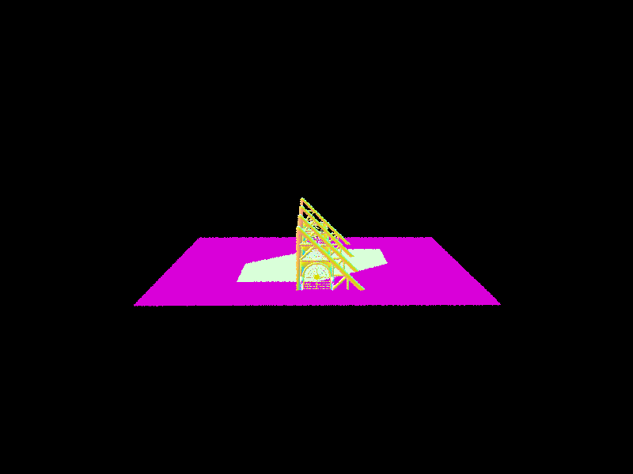
Part 2: Bounding Volume Hierarchy
BVH Construction
The BVH is built recursively in construct_bvh. First, we expanded an empty BBox to include every primitive's bounding box in the current range. If the number of primitives is at or below max_leaf_size, we would just create a leaf_node and trutnr. Otherwise we pick the split axis by choosing whichever of X, Y, Z has the largest extent in the node's bounding box.
This produces more balanced trees because it splits along the dimension where the primitives are most spread out.
We put the split value as the average centroid of all the primitives along our chosen axis.
This handles scenes with irregular geometry better than the midpoint of the bounding box extent, which can tend to bias toward empty space. We use std::partition to reorder the primitive list so primitives with centroid below the split go left and the rest go right.
If all primitives fall on one side whic mens all centroids are equal, we force a median split at start + count/2 to prevent infinite recursion.
Normal Shading on Complex Meshes
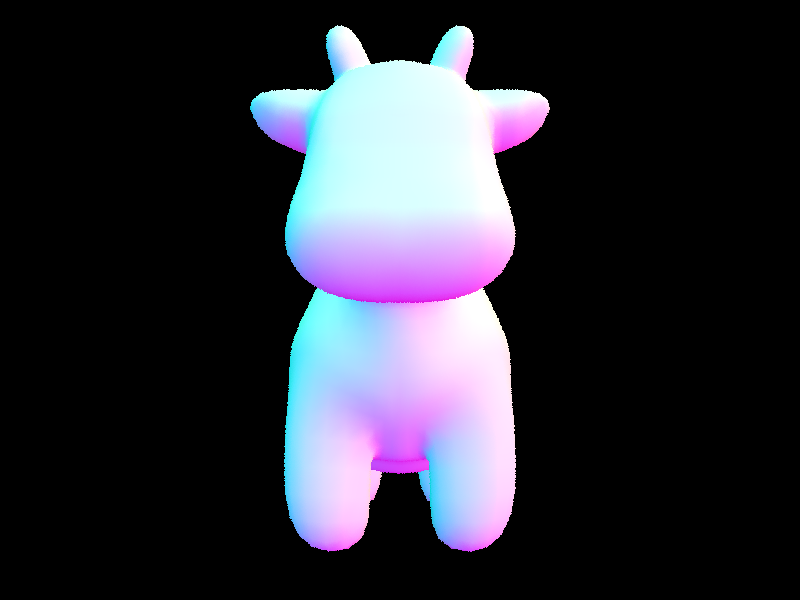
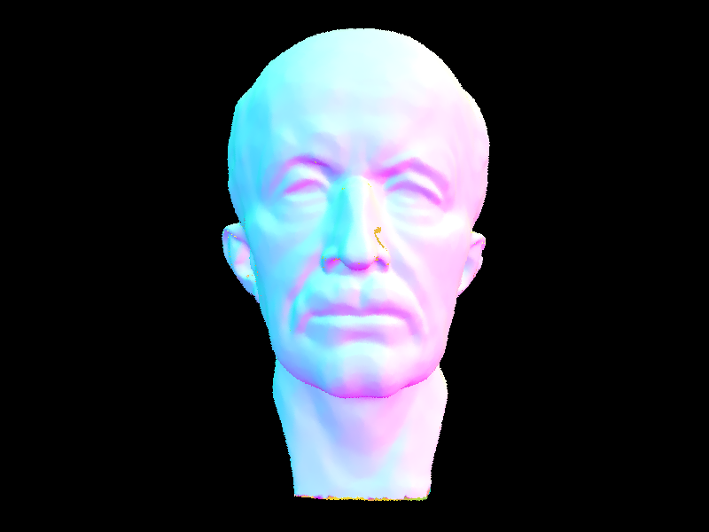
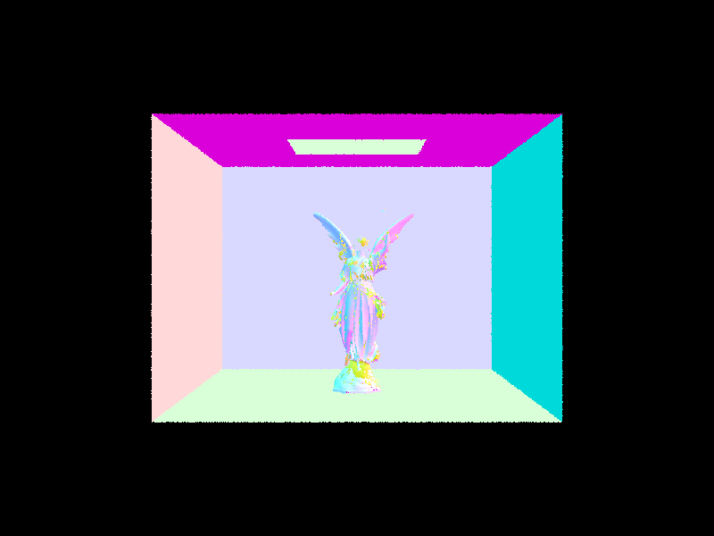
Performance Comparison
| Scene | Primitives | Without BVH | With BVH | Speedup |
|---|---|---|---|---|
| cow.dae | 5,856 | 1.47 s | 0.28 s | 5.3× |
| maxplanck.dae | 50,801 | 21.3 s | 0.32 s | 67× |
| CBlucy.dae | 133,796 | 62.6 s | 1.06 s | 59× |
Without BVH acceleration, the path tracer tests every ray against every primitive, giving O(n) intersection cost per ray. For the cow at 5,856 triangles this takes 1.47 seconds, and for CBlucy at 133,796 triangles it balloons to 62.6 seconds and while these timings arent the most accurate they seem to provide a semblance of general speed and all measured with normal shading on an 800×600 render on a Macbook M3 Pro Chip. The BVH reduces intersection complexity to O(log n) by recursively culling entire subtrees whose bounding boxes are missed by the ray. Crucially, the average tests per ray stays roughly constant at 6–7 across all three scenes regardless of primitive count, directly confirming the O(log n) scaling of BVH traversal.
Part 3: Direct Illumination
Uniform Hemisphere Sampling
We built a local coordinate frame at the hit point using make_coord_space so the surface normal aligns with the z-axis.
We then drew num_samples directions uniformly from the hemisphere, transform each to world space, and cast a shadow ray from the hit point.
If the ray intersects an emissive surface, we collect f(w_out, wi) * emission * cos_theta / pdf where cos_theta = wi.z and pdf = 1 / (2*pi) for uniform hemisphere sampling.
Only samples that actually hit a light source are included, which means most random hemisphere directions miss the light entirely and produce high variance at low sample counts.
Light Importance Sampling
Instead of sampling random hemisphere directions, in this sampling we switch to each light in the scene and get a direction pointed toward the light along with the emitted radiance and pdf.
We skip samples where cos thetha is 0( aka light is behind the surface) and cast a shadow ray with max_t = distToLight - EPS_F.
If no occluder is found we accumulate the contribution. Every sample is directed toward an actual light source, which eliminates the wasted samples of hemisphere sampling and dramatically reduces variance.
Point lights are handled naturally since they just need one sample per pixel with no occluder check.
Hemisphere vs. Importance Sampling
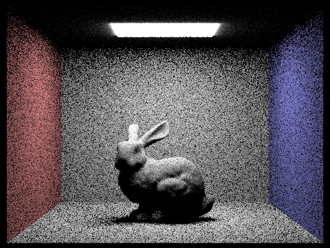
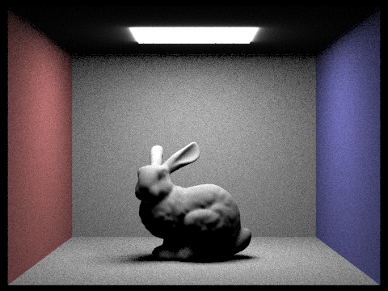
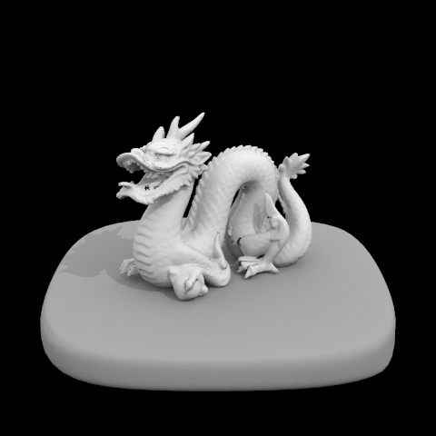
At equal sample budgets, hemisphere sampling tends to produce noticeably noisier images than light importance sampling ,especially near shadow boundaries and in areas that subtend only a small solid angle of the light. Moreover, or the Cornell Box scene the area light covers a small fraction of the upper hemisphere above any surface point, so most uniformly sampled directions contribute zero radiance. Importance sampling eliminates this waste by always directing samples toward the actual lights, resulting in much lower variance per sample and a cleaner image several times faster. It is also the only viable method for point lights, which have zero probability of being hit by any random hemisphere sample.
Light Ray Noise Comparison (s=1, importance sampling)
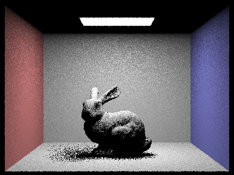
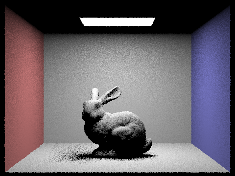
As the light ray count increases from 1 to 64, the soft shadow regions become progressively smoother. With a single light ray per pixel, the penumbra is extremely noisy since each pixel either fully sees the light or is fully shadowed, producing a high-frequency checkerboard pattern. With 4 rays the noise is still pronounced but takes on a more grainy character. By 16 rays the shadow boundary is visibly smooth, and at 64 rays the soft shadow transitions cleanly from lit to unlit with minimal residual noise.
Part 4: Global Illumination
Implementation
To implement global illumination, we modified raytrace_pixel, est_radiance_global_illumination, and at_least_one_bounce_radiance. In raytrace_pixel, each camera ray is initialized with depth = max_ray_depth so the recursion has a countdown of remaining bounces. In est_radiance_global_illumination, zero-bounce radiance is only added when isAccumBounces is true or max_ray_depth == 0. This ensures that unaccumulated bounce renders correctly show a black light source rather than including emission at every depth. The total radiance is then the sum of this emission term and at_least_one_bounce_radiance.
The recursion happens in at_least_one_bounce_radiance. At each hit point, we build the local shading frame using make_coord_space and compute w_out in local coordinates. Direct lighting via one_bounce_radiance is added only when isAccumBounces is true or when r.depth == 1 (the final bounce), which allows us to isolate individual bounce contributions when isAccumBounces is false. If r.depth <= 1 we return immediately. Otherwise, we sample a new incoming direction from the BSDF using sample_f, which returns the BSDF value f, the sampled direction wi_local in local space, and the PDF. We transform wi_local to world space using o2w, construct a bounce ray from the hit point offset by EPS_F, and recurse if the ray hits the scene. The indirect contribution is f * L_indirect * cos_theta / pdf / continuation_prob, where cos_theta = wi_local.z since the normal is aligned with the z-axis in local space.
For Russian Roulette, the first indirect bounce is always traced when max_ray_depth > 1. For all subsequent bounces, we randomly terminate with probability 0.35 using coin_flip. Rays that survive are divided by the continuation probability of 0.65 to keep the Monte Carlo estimator unbiased in expectation.
Global Illumination
The two images below render CBbunny and CBspheres with full global illumination at 1024 samples per pixel, 16 light samples, and max_ray_depth = 5. The Cornell box setup makes indirect bounces especially visible. We can see light reflecting off the colored walls softly bleeding onto the bunny, spheres, and floor, giving the scene a much more natural appearance than direct lighting alone.
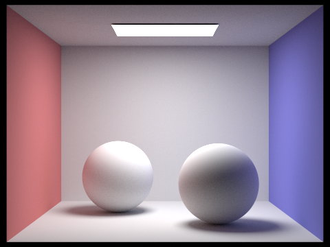
Direct vs. Indirect Illumination
To isolate the contributions of direct and indirect lighting, we rendered CBbunny with each component separately at 1024 samples per pixel and max_ray_depth = 5. For the direct-only render, we added an early return in at_least_one_bounce_radiance after computing one_bounce_radiance, preventing any recursive bounces. For the indirect-only render, we conditioned one_bounce_radiance to skip the first hit and removed zero-bounce emission from est_radiance_global_illumination.
In the direct-only image, shadows are hard and dark with no color bleeding from the walls. In the indirect-only image, the light source appears black and the scene is lit entirely by bounced light, producing soft diffuse illumination with visible color bleeding from the red and blue walls onto the bunny. Direct lighting establishes the hard shadows and overall contrast, while each additional indirect bounce softens those shadows and builds up the color bleeding, which makes the scene feel more realistic.
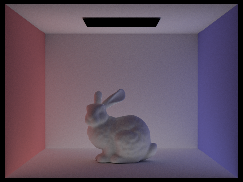
Bounce Comparison (isAccumBounces = false)
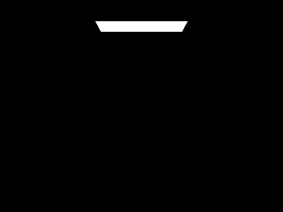
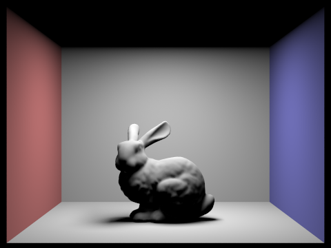
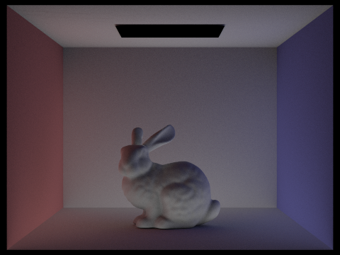
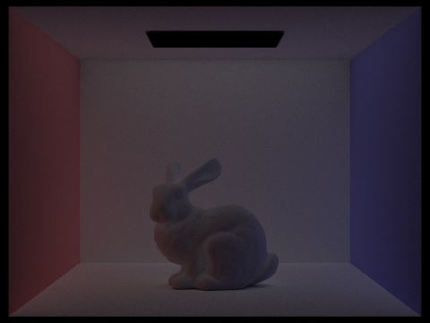
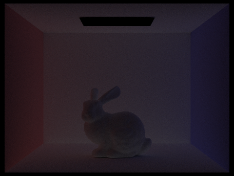
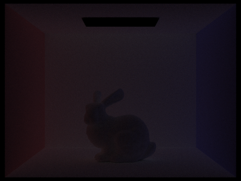
Bounce Comparison (isAccumBounces = true)
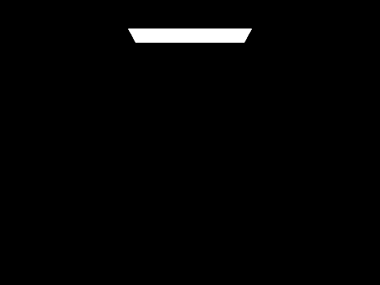
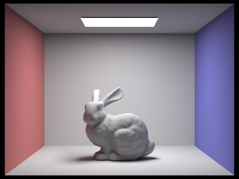
The unaccumulated renders isolate each individual bounce contribution. At m=0, only the light source is visible. At m=1, direct lighting dominates with hard shadows and no color bleeding. The 2nd bounce captures light that has reflected off one surface before reaching another — this fills in harsh shadows and introduces visible color bleeding from the red and blue walls onto the bunny and floor. The 3rd bounce is significantly darker with much less detail visible, contributing subtle additional color but with rapidly diminishing perceptual impact. Unlike rasterization, which computes lighting per surface without any notion of light propagating between surfaces, these indirect bounces are what give the scene its soft shadows and color bleeding. The accumulated renders show how these bounces compound, with the most significant perceptual jump occurring between m=1 and m=2, where color bleeding and shadow softening become clearly visible.
Russian Roulette
We enabled Russian Roulette termination in at_least_one_bounce_radiance, rendering CBbunny at 1024 samples per pixel and 16 light samples, so that rays beyond the first indirect bounce are randomly terminated with probability 0.35, with surviving rays scaled by the continuation probability to keep the estimator unbiased. At m=0 only the light source is visible, and at m=1 direct lighting produces hard shadows with no color bleeding. The largest visual change occurs between m=1 and m=2 — the ceiling brightens, the floor lightens significantly, the shadow under the bunny softens, and the bunny picks up subtle pink and blue tinting from the walls. Beyond m=2, the improvements are marginal: m=3 and m=4 are barely distinguishable, and m=100 looks virtually identical to m=4. This shows how Russian Roulette allows arbitrarily high max depth without proportional increases in computation, as most paths terminate naturally within a few bounces.
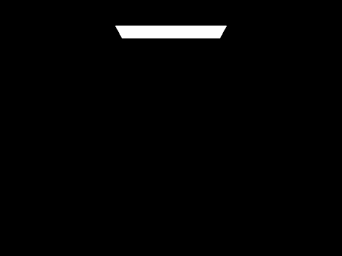
Sample-Per-Pixel Comparison
We rendered CBbunny with 4 light rays and max_ray_depth = 5 at 1, 2, 4, 8, 16, 64, and 1024 samples per pixel to observe how increasing the number of camera rays per pixel reduces Monte Carlo noise across the scene.
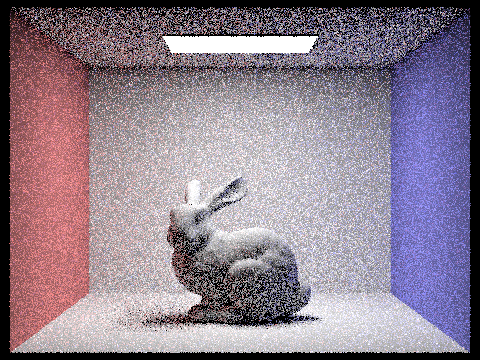
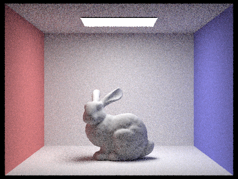
At low sample counts (1, 2, 4, 8), the image appears noticeably grainy with Monte Carlo noise clearly visible throughout the entire scene. As the sample rate increases, the noise gradually and consistently decreases. By 64 spp the image looks fairly clean with only subtle remaining noise in softer regions. At 1024 spp the result is the smoothest, particularly in shadowed and indirectly lit regions.
Part 5: Adaptive Sampling
Algorithm
Uniform sampling at a fixed high rate wastes work on pixels that converge quickly, like flat uniformly lit surfaces. Adaptive sampling stops early for those pixels and concentrates samples on difficult regions such as shadow boundaries and complex geometry with high-frequency variation.
We track the running sum and sum of squares of per-sample illuminances, and every samplesPerBatch samples we compute a 95% confidence interval on the mean. If the interval width is within 5% of the estimated mean, we declare the pixel converged and stop sampling early. Otherwise we continue up to ns_aa. The actual sample count is written to sampleCountBuffer, which drives the rate heatmap. We check every batch rather than every sample to avoid the overhead of computing a square root on every single sample.
Scene 1: CBbunny
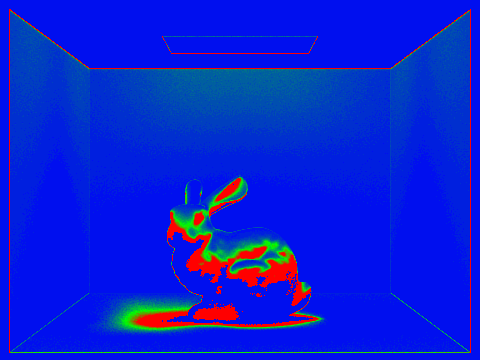
The rate map shows that pixels on the blank wall and floor (uniformly lit, low variance) converge with very few samples (blue). The shadow boundary and the areas beneath the bunny's ears, where direct illumination changes rapidly across adjacent pixels, require many more samples (red and orange) to satisfy the 5% tolerance.
Scene 2: CBspheres (Lambertian)
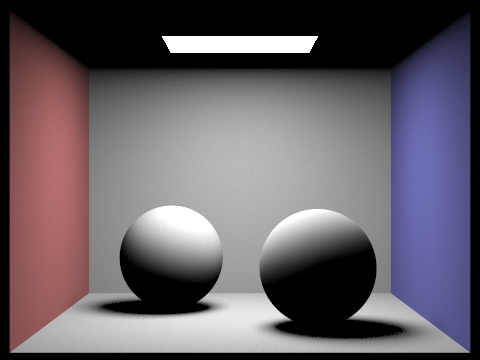
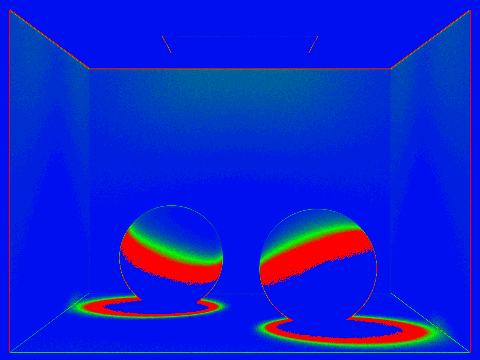
The empty background walls converge almost immediately (blue). The curved surface of each sphere, especially near the shadow contact area on the floor and around the terminator between the lit and unlit regions, is much harder and receives significantly more samples (red). The top of the spheres closest to the area light converges quickly because the direct illumination there is strong and consistent.
Extra Credit
Jittered Pixel Sampler
The default UniformGridSampler2D places samples completely randomly within each pixel via random_uniform(), which can leave some regions of a pixel oversampled and others untouched. We implemented a jittered sampler to guarantee more even coverage by stratifying the pixel domain. For n samples, we divide the pixel into a √n × √n grid and place exactly one random sample within each cell, so no cell is left unsampled while randomness is still preserved within each cell.
We added JitteredSampler2D as a new subclass of Sampler2D in sampler.h. It stores a pre-generated list of stratified samples and an index to track which to return next, both marked mutable so they can be modified inside const methods. In sampler.cpp, generate() fills the sample list by iterating over each cell (i, j) and mapping it to the subregion [i/n, (i+1)/n] x [j/n, (j+1)/n], placing the sample at ((i + random_uniform()) / n, (j + random_uniform()) / n). After generating all samples, a Fisher-Yates shuffle randomizes the return order to prevent systematic correlations between adjacent pixels while preserving stratification.
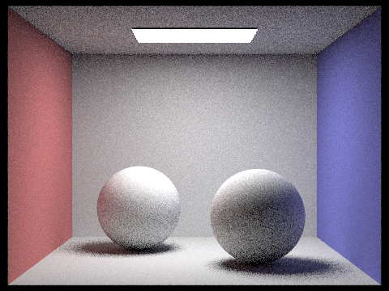
We compared uniform and jittered sampling at low sample counts where differences are most visible. The uniform render shows clumpier noise, while jittered produces more evenly distributed noise. The diagonal shadow band on the sphere is wider and more diffuse with jittered sampling, consistent with stratified sampling guaranteeing more uniform pixel coverage.
Surface Area Heuristic (SAH) BVH Splitting
The default BVH finds the longest axis, computes the average centroid, and partitions there. This is fast but ignores bounding box overlap and primitive distribution. SAH improves this by evaluating the expected ray intersection cost across all possible splits. For each axis, we divide the extent into 12 buckets, assign primitives by centroid, and for each split position compute a weighted cost based on the surface area and primitive count of each child relative to the parent. We pick the axis and split with minimum cost, falling back to a median split if the result is degenerate.
| Scene | Method | Primitives | Build Time | Render Time | Rays/sec | Isects/Ray |
|---|---|---|---|---|---|---|
| CBbunny | SAH | 28,588 | 0.0091s | 18.9158s | 3.1774M | 11.35 |
| CBbunny | Centroid | 28,588 | 0.0085s | 19.3986s | 2.7967M | 11.77 |
| dragon | SAH | 105,120 | 0.0410s | 11.4848s | 2.6793M | 9.68 |
| dragon | Centroid | 105,120 | 0.0686s | 12.5758s | 2.7084M | 9.18 |
| wall-e | SAH | 240,326 | 0.0930s | 9.8960s | 2.4306M | 15.88 |
| wall-e | Centroid | 240,326 | 0.1313s | 12.8644s | 1.6485M | 20.84 |
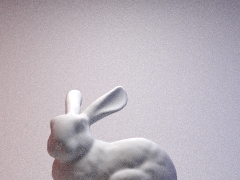
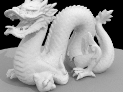
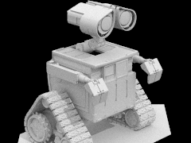
On CBbunny, both methods perform nearly identically since the geometry is uniform enough that centroid splitting already produces a good tree. The advantage of SAH becomes clear on more complex scenes. On dragon, SAH builds faster (0.041s vs 0.069s) and renders faster (11.5s vs 12.6s). On wall-e, the most geometrically non-uniform scene, SAH reduces intersection tests per ray by 31% (15.88 vs 20.84) and renders 23% faster (9.9s vs 12.9s), even with a more expensive construction pass. SAH outperforms centroid splitting when geometry is non-uniformly distributed in space, which is the common case for real-world scenes.
Optimized Iterative BVH
We replaced the recursive construct_bvh_sah and intersection routines with iterative versions using a fixed-size array stack to cut down on recursive function call overhead and avoid potential call stack overflow on deep trees. For construction, instead of recursing on children we push Task structs onto a stack and process them in a while loop. For traversal, intersect_iterative and has_intersection_iterative keep a stack of BVHNode* pointers, popping each node, checking its bounding box, and either testing primitives directly if it's a leaf or pushing its children.
In our first attempt we used std::stack, which actually made render times slower than recursive due to heap allocation overhead on every push and pop. Switching to a fixed-size array stack kept the traversal data in CPU cache and produced consistent speedups.
| Scene | Method | Build Time | Render Time |
|---|---|---|---|
| CBbunny | SAH Recursive | 0.0091s | 18.9158s |
| CBbunny | SAH Iterative | 0.0145s | 10.4792s |
| dragon | SAH Recursive | 0.0410s | 11.4848s |
| dragon | SAH Iterative | 0.0859s | 10.0008s |
| wall-e | SAH Recursive | 0.0930s | 9.8960s |
| wall-e | SAH Iterative | 0.1189s | 8.3155s |
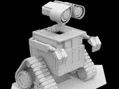
Iterative traversal was faster during render time by 45% on CBbunny, 13% on dragon, and 16% on wall-e. Build time for SAH Iterative was slightly slower than SAH Recursive, likely due to stack management overhead during construction, but since construction happens only once this tradeoff is worth it. The iterative and recursive SAH renders produce visually identical images.
Denoising via Bilateral Filtering
We implemented denoising by tracing the rendering pipeline to find where final image data lives. sampleBuffer in PathTracer stores the raw HDR Vector3D pixel values before tonemapping, which is the ideal place to apply a filter since it preserves full floating point precision. We implemented denoising as a static helper function bilateral_denoise in raytraced_renderer.cpp, hooked up to the N key in application.cpp so it can be applied interactively after a render completes.
The bilateral filter replaces each pixel with a weighted average of its neighbors, where weight depends on both spatial distance (closer neighbors contribute more) and color similarity (neighbors with similar color contribute more). This smooths noise in flat regions while preserving sharp edges like shadow boundaries. The two key parameters are sig_s (spatial radius) and sig_r (color range threshold).
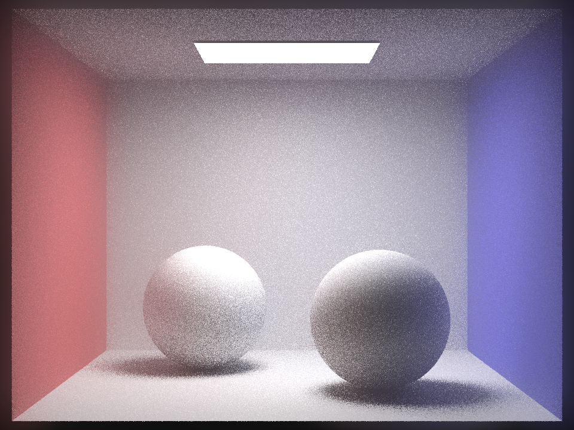
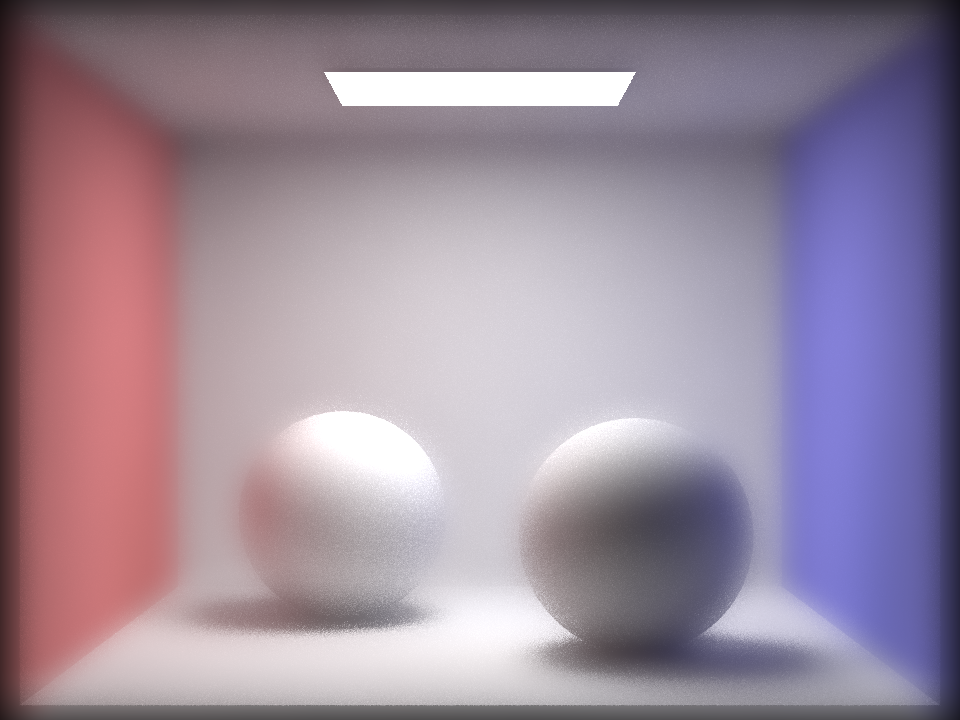
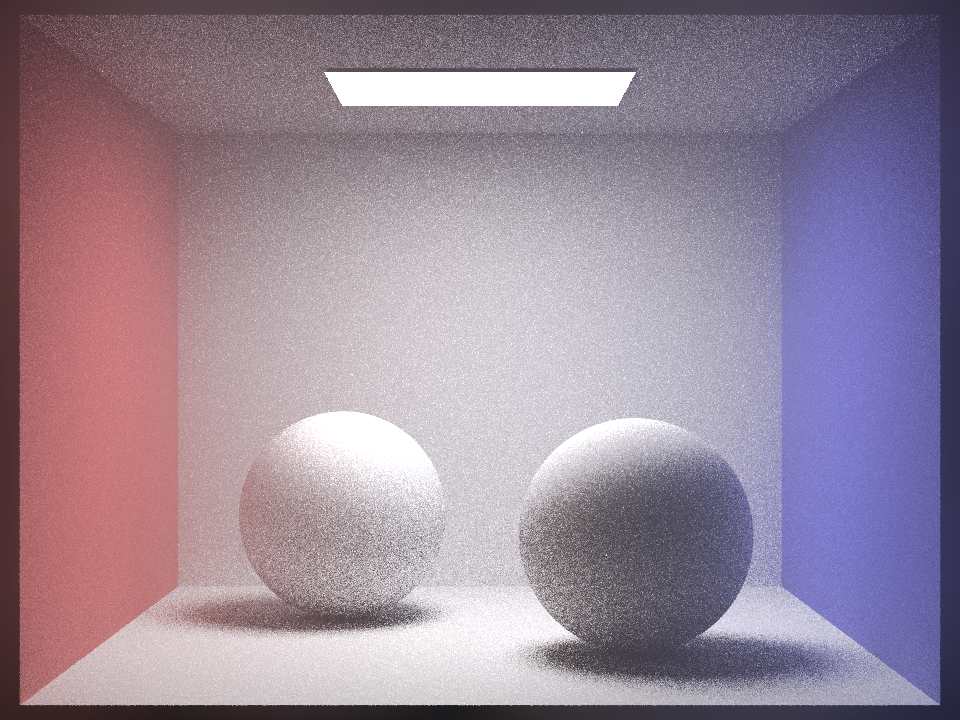
The default settings significantly reduce noise while keeping shadow edges and sphere contours intact. The aggressive range setting (sig_r=0.5) produces an overly smooth image where the filter treats dissimilar colors as valid neighbors and blurs across edges, causing the red wall color to bleed outward like an aura. The large spatial setting (sig_s=60) looks similar to the default overall but shadows become more diffuse, most noticeably where the two walls meet the ceiling. It is also significantly slower since the number of neighbor checks scales as O(radius²). These results show that sig_s controls the breadth of smoothing while sig_r controls edge preservation.
Partner Workflow
We began by meeting before the pre-check deadline to read through Homework 3 together and align on our approach. We planned our timeline to complete one to two parts each week and regularly met to pair program, which helped us stay on track and debug efficiently. We also used a shared Google Drive folder to save and share screenshots, which was especially helpful for identifying and resolving issues in our renders. Throughout the process, we communicated clearly about our availability, adjusting our schedule when one of us was busy and taking advantage of weekends when we had more time. Overall, we learned that starting early makes collaboration stress-free and more fun.